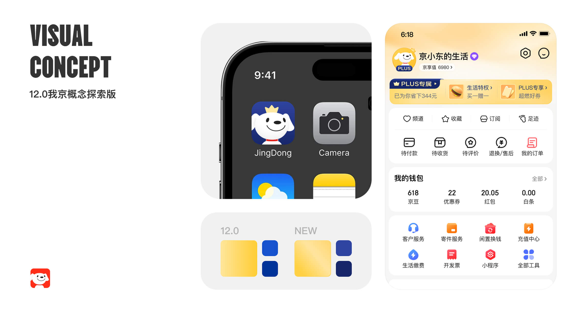
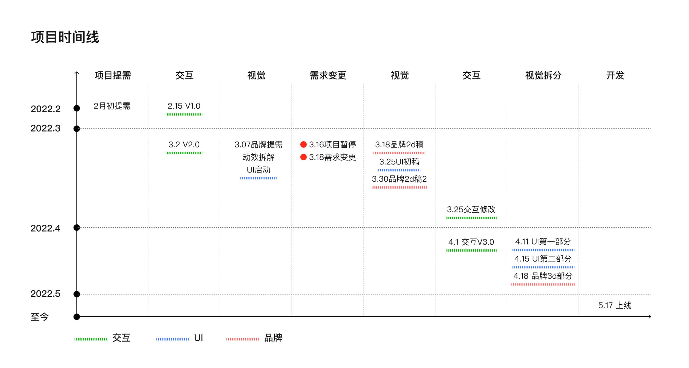
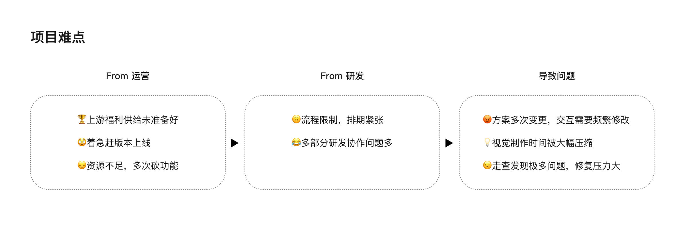
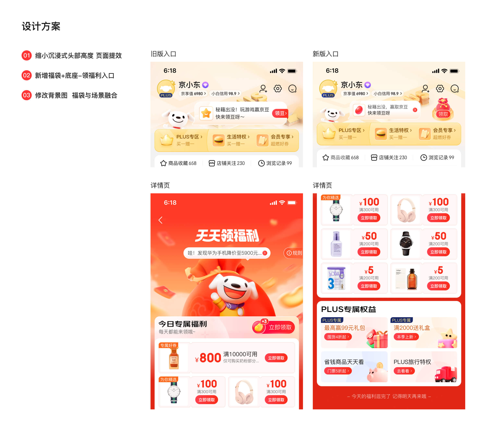
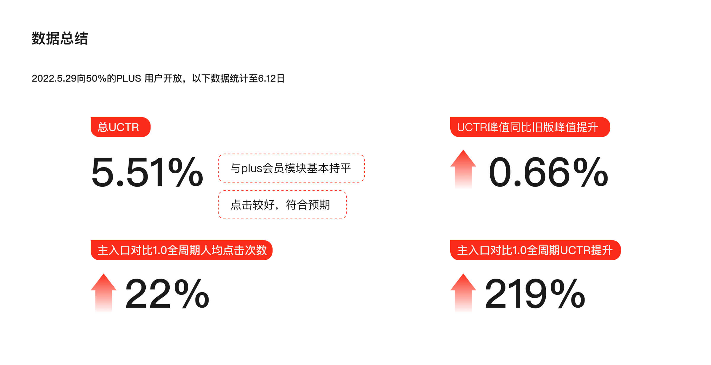
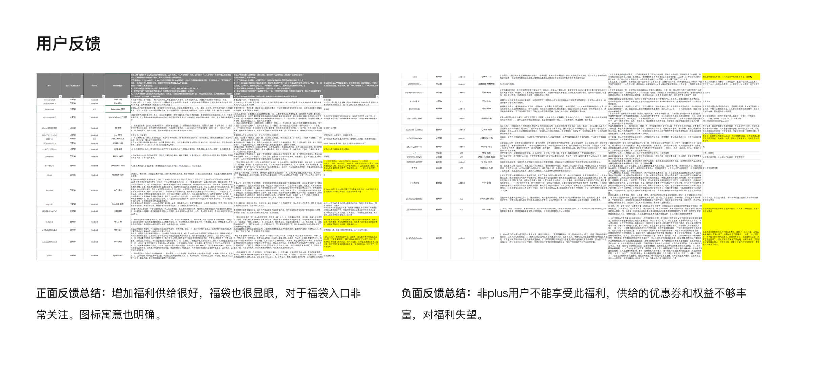

NO.1
项目概览
名称：京东APP 12.0 我的京东改版
时间周期：2023-2024
项目类型：APP 核心页面改版
我的角色：主视觉设计师，本次项目围绕「我的京东」页面进行视觉与结构升级，通过信息层级重组、功能区优化和视觉风格迭代，提升页面的使用效率、会员感知整体质感。
名称：京东APP 12.0 我的京东改版
时间周期：2023-2024
项目类型：APP 核心页面改版
我的角色：主视觉设计师，本次项目围绕「我的京东」页面进行视觉与结构升级，通过信息层级重组、功能区优化和视觉风格迭代，提升页面的使用效率、会员感知整体质感。

核心问题：旧版「我的京东」页面功能营销入口较多，信息层级复杂，视觉风格偏散，用户在查找订单、资产、权益和常用服务时路径不够清晰。
设计目标：在保留用户熟悉操作习惯的基础上，优化页面结构与视觉表达，让页面更清晰、更高效，也更符合京东 12.0 的整体升级方向。

结构梳理：参与梳理「我的京东」核心功能区，包括用户信息、订单、资产、权益、常用工具和推荐内容等模块。
视觉探索：围绕「简单、低价、至真至简」的设计方向，探索页面卡片、图标、色彩、会员氛围和整体视觉节奏。
核心设计：负责「我的京东」页面主视觉方案设计，优化顶部会员区、功能入口、钱包资产、工具区和底部内容模块。
落地协作：与产品、运营和研发团队协作，完成方案评审、设计走查、上线跟进和数据复盘。

新版「我的京东」上线后，多个核心指标表现正向：
数字工具行提升：6.25%
物流提示条 UV CTR 提升：6.5%
完整账单 UV CTR 提升：2.4%
PLUS 卡片提升：0.1%
通过本次改版，页面的信息层级更加清晰，核心功能入口更聚合，用户对订单、资产、权益和常用服务的查找效率得到提升。
我京是连接用户资产、订单、权益和服务的高频入口。改版过程中需要在功能效率、视觉品质和商业转化之间保持平衡，让页面既好用，也更有京东 15.0 的版本升级感。

名称：我京小福星 / JOY 小福星
时间周期：2022.02 - 2022.05
项目类型：我京模块重点项目
我的角色：主视觉设计师，本项目围绕「我的京东」模块新增福利运营能力，通过“小福星”形象与福利入口设计，将优惠券、权益、京豆等福利内容聚合展示，增强用户对我京模块的福利感知与使用粘性。

问题：原「我的京东」更多偏工具属性，用户对福利供给的感知较弱；同时项目中存在上游供给不稳定、方案频繁变更、视觉与交互反复调整、开发走查问题多等落地难点。
设计目标：在不破坏我京原有结构的基础上，新增更醒目的福利入口与承接页面，让用户更容易发现、领取和回看福利，同时提升我京模块的营销效率。

入口设计：设计我京首页中的小福星福利入口，优化头部区域高度、背景氛围、福袋入口和动效表现，提升点击效率。
领福利中心：参与「天天领福利」页面设计，完成优惠券、PLUS 权益、京豆等福利内容的视觉整合，让不同类型福利具备统一的领取体验。
问题走查：参与上线前后的视觉走查与问题修正，包括资源替换、背景图、按钮刷新、安卓适配、楼层掉楼等问题处理。
后期维护：根据业务需求继续维护福袋动效、京豆动效、领取记录入口、banner 与商品楼层等后续迭代内容。

项目上线后，入口与福利中心数据表现较好：
入口点击次数：对比 1.0 全周期人均点击次数提升 22%
入口 UCTR：对比 1.0 全周期提升 219%
UCTR 峰值：同比 2021 年峰值提升 0.66%
福利区点击占比：87%
权益区点击占比：10.31%
用户反馈显示，小福星入口和福利供给感知较强，图标寓意明确；但非 PLUS 用户对部分权益无法领取存在失望感，说明福利供给丰富度和人群匹配仍需继续优化。
这次项目让我了解设计不仅要让入口更醒目，也要考虑供给是否充足、流程是否稳定、不同用户是否都能获得正向反馈。

